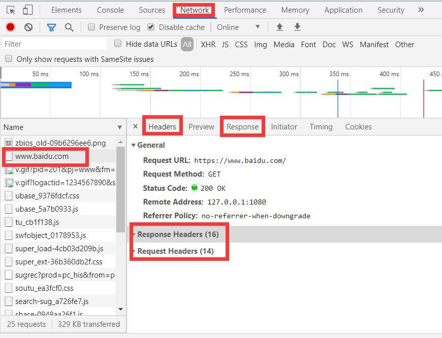
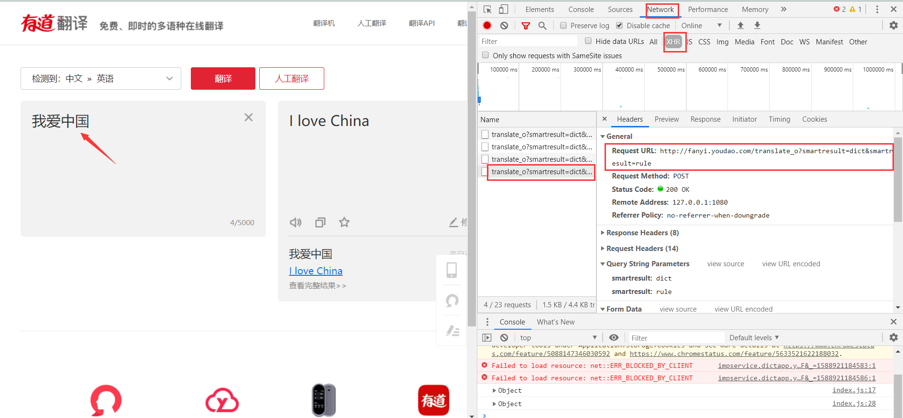
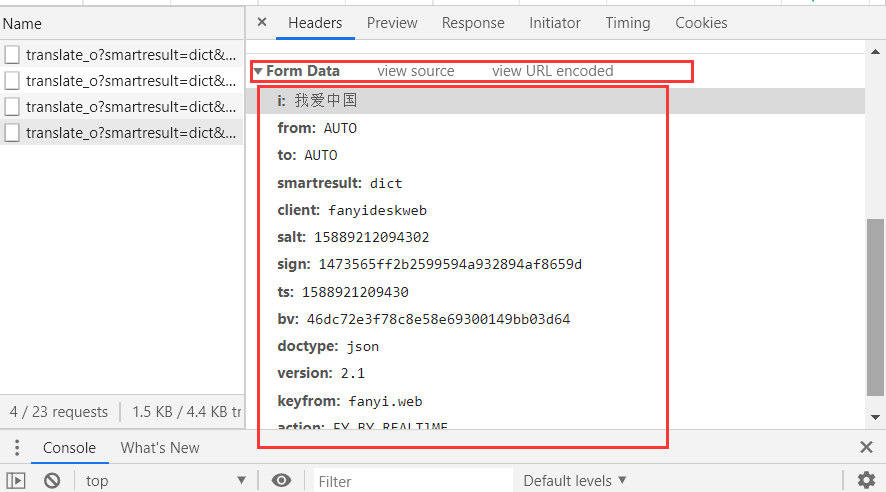

Python进阶学习|爬虫基础crawler
什么是爬虫
访问网站的流程
本地host→DNS(域名解析服务器)→网站服务器→发送html等文件→浏览器下载并渲染→请求页面
- 如果host被劫持，我们有可能通过域名访问到假的网站，产生安全风险
- dns会解析我们输入的域名，如
https://www.baidu.com并得到一个ip地址 - 网站(如：百度)的服务器收到访问请求后，传送html，css，js等文件
- 浏览器下载相应样式和图片，并渲染出来供用户观看
爬虫
网络爬虫^1（又称为网页蜘蛛，网络机器人，在FOAF社区中间，更经常的称为网页追逐者），是一种按照一定的规则，自动地抓取万维网信息的程序或者脚本。另外一些不常使用的名字还[蚂蚁、自动索引、模拟程序或者蠕虫。
Requests库
常见请求方式
GET和POST
- GET是默认的HTTP请求方法，用于直接输入网址的方式去访问网页
- POST方法主是向Web服务器提交表单数据，通常表单提交时采用POST方法
- GET请求一般会把请求的参数直接包含/显示在URL中，而POST直接通过请求体来传递参数
- GET相对于POST而言较不安全，因为参数直接暴露在URL上，所以不可用来传递敏感信息
安装
命令行窗口：
1 | pip install requests |
python文件中引入：
1 | import requests |
基本属性
这里创建一个text.py文件来进行演示：
1 | import requests |
下面的表格以变量名为res为例.
| 变量属性 | 含义 |
|---|---|
res | requests库中定义的response类<本身>|<Response> |
res.content | res的二进制文本流 |
res.text | 返回res的响应内容 |
res.url | 返回res的请求url地址|字符串 |
res.request.headers | 返回res的请求头信息|字典 |
res.headers | 返回res的响应头信息|字典 |
res.status_code^2 | 返回res的请求状态码 |
res.json() | 返回res由post请求发送数据后所得的json内容（可通过 res.text查看后结果后，为优化代码再选择性使用） |
==以上内容，均可以通过浏览器内置的“开发者工具”查看==
一般情况下，在网页上 通过按
F12进入，在NetWork中便可以看见许多数据。
其中，Request Headers内的cookie，host，user-agent，Response Headers内的set-cookie 等属性是我们需要密切关注的。
下面给出 将读取到的信息写入文件中以保存的 简单小程序 的代码
1 | import requests |
之后找到当前目录下text.html文件并打开，就能看见完整的内容了。
常见编码问题
在上述代码展示当中，极有可能出现乱码的情况，如：该是中文的地方变成了æ´å¤äº§å之内的符号
为解决此类问题，下面给出两种解决方案：
- 使用
res.content.decode(utf-8)代替res.text - 在使用数据前，先通过
res.encoding = 'utf-8'限制编码
选择以上任意一种即可。
另外还需在写入时对open传入encoding参数：
1 | if res.status_code == 200 : |
问题解决……
自定义请求
用户代理
User Agent中文名为用户代理，简称 UA，它是一个特殊字符串头，使得服务器能够识别客户使用的浏览器及版本、浏览器渲染引擎、浏览器语言、浏览器插件等信息
一些网站常常通过判断 UA 来给不同的浏览器发送不同的页面，因此可能造成某些页面无法在某个浏览器中正常显示，但通过伪装 UA 可以绕过检测。
许多网站也由此进行 反爬操作
为了更好的工作，我们需要自定义**请求头(request headers)**来进行伪装：
1 | # 设置请求变量（字典） |
于是，网站了解到你的UA是普通浏览器而不是爬虫程序后，就会放心大胆的把内容交给你了~（误）
手动携带cookie
关于cookie的知识：点击跳转
为了让网站识别到我们的“登录身份”，我们需要在请求头中自定义cookie内容。
具体操作：
在已登录好的页面通过开发者工具找到cookie信息，添加至请求头内即可。
如：
1 | headers = { |
事实上，这种方法过于笨拙，不够智能。之后我们将给出：自动携带cookie信息 的方法。
发送请求信息
我们知道，网页可以通过form表单将数据传入服务器，之后显示相应的处理。
常见的，如翻译网址，就可以接收信息，并通过POST请求进行提交，最后给出翻译结果。
知道这个信息之后，我们便可以通过这个方法制作一个简单的翻译小程序：
以有道翻译为例，进入官网：http://fanyi.youdao.com/ 后，在输入框输入任意内容如：我爱中国
通过F12查看缓存信息，点击NetWork下的XHR后，得到通过POST请求的数据。

之后，在python中，将url改为相应的url。

然后新建data字典将Form Data内的东西通过key-value的方式一一写入。代码如下：
1 | import requests |
关于Cookie信息
http请求是无状态的请求协议，不会记住用户的状态和信息，也不知道用户在登录之前访问过什么。
因此，网站需要记录用户是否登录时，就需要在用户登录后创建一些信息并且要把这些信息记录在当前用户的浏览器中，记录的内容就称为cookie。
用户使用当前的这个浏览器继续访问当前服务器/网站 时，就会主动携带这个网站设置的cookie信息，以便服务器识别身份。
cookie会在浏览器中记录信息,并且在访问时携带这个信息。但是存在一些缺点：
- 浏览器更换或删除cookie后， 信息丢失
- cookie在浏览器中记录的信息不安全,因为不能记录敏感信息
session简介
session通过服务器端进行数据的记录，之后在给每个用户生成一个sessionID，将这个sessionID设置在用户的浏览器中作为“通行证”以识别用户身份。
给用户浏览器的sessionID其实就设置为一个只有服务器端能识别的cookie。
因此，session解决了信息丢失和信息不安全的cookie的缺点。
Requests库的session方法
requests库的session会话对象可以跨请求保持某些参数，应用于需要登录的页面的爬取，自动的为每个爬虫请求添加cookie，保持爬虫的会话状态,避免手动的为每个爬虫请求手动添加cookie
使用时需要创建一个session对象，之后的跨请求操作均通过此对象进行操作
下面以人人字幕组网站为例进行演示。
我们找到了其登录页面的地址：
http://www.rrys2019.com/user/login找到了其登录后能查看的某个网页（登录之前不能查看，会跳转）：
http://www.rrys2019.com/User/user在登录界面下就打开开发者工具，勾选
Preserve log（保存日志，防止登陆成功跳转后，数据丢失）。于是在ajaxLogin里找到了表单数据，通过data字典传入session创建的对象中。代码示例：
1 | import requests |
Xpath库
XPath,全称XML Path Language,即XML路径语言，它是一门在XML文档中查找信息的语言。
最初是用来搜寻XML文档的，但同样适用于HTML文档的搜索。所以在做爬虫时完全可以使用XPath
做相应的信息抽取。详见官方文档
安装
1 | pip install lxml |
python文件中引入：
1 | from lxml import etree |
基础操作
解析文本
方法一：
定义一个变量如text保存html的文本内容，使用etree.HTML(text)解析.
1 | # 引入 |
方法二：
使用etree.parse()方法，通过读取html文件来解析其文本内容。
1 | # 引入 |
提取数据
XPath 使用路径表达式在 XML 文档中选取节点。节点是通过沿着路径或者 step 来选取的。
下面列出了最有用的路径表达式：
| 表达式 | 描述 |
|---|---|
nodename | 选取此节点的所有子节点。 |
/ | 从根节点选取。 |
// | 从匹配选择的当前节点选择文档中的节点，而不考虑它们的位置。 |
. | 选取当前节点。 |
.. | 选取当前节点的父节点。 |
@ | 选取属性。 |
例如上述的text的例子，可以通过如下代码提取指定数据：
1 | #较精确指定 |
以上均是提取文本的例子，用到了text()，事实上，还可以通过@来提取标签内的属性值。
1 | # 将指定a标签下的文本内容保存在t内（列表形式，t此处含义是text） |
属性匹配
上面，我们了解到了提取数据的基本方法：
1 | text() # 提取文本 |
其实，我们也用到了属性匹配的相关内容，例如：
1 | html.xpath('//div[@class="xxxx"]/..') |
这里，我们再进行扩展。如果html文件内有如下属性值：
1 | <li class="li li=first" name="dashabi">文本文本文本文本</li> |
则选取时可使用：
1 | html.xpath('//li[contains(@class,"li") and @name="dashabi"]/text()') |
意为：html下所有的，class属性值 包含有"li"而且其name属性值为"dashabi"的<li>标签下的内容
（ 多属性匹配 和 属性多值匹配）
更多更详细的选取规则，如 xpath的运算符，如何选取第一个，最后一个，前n个的方法 详见官方文档
BeautifulSoup4库
BeautifulSoup4 (简称bs4)翻译成中文就是”美丽的汤”，这个奇特的名字来源于《爱丽丝梦游仙境》
(这也是为何在其官网会配上奇怪的插图，以及用《爱丽丝》的片段作为测试文本)
官方文档: htp://www.crummy.com/software/BeautifulSoup/bs4/doc/index.zh.html
安装
1 | pip install Beautifulsoup4 |
bs 在使用时需要指定一个“解析器”：
- html.parse - python 自带，但容错性不够高，对于一些写得不太规范的网页会丢失部分内容
- lxml - 解析速度快，需额外安装
- xml - 同属 lxml 库，支持 XML 文档
- **html5lib ** - 最好的容错性，但速度稍慢
这里的 lxml 和 html5lib 都需要额外安装
^如果之前跟着本文章一起安装过lxml就无需安装^
在python文件中：
1 | # 引入 |
基本操作
这里以官方文档中给出的实例html文本为例，将其以字符串形式赋值给html_doc变量。
1 | <html> |
这里给出三种常见的搜索方法.
在python文件中进行操作
1 | from bs4 import BeautifulSoup |
结构化元素获取
使用类似
soup.attr_parent.attr_son的语法 直接获取
1 | soup.p |
通过搜索方法获取
使用内置的方法
find()和find_all()搜索以获取
1 | soup.find('a') |
其他的搜索方法：
| 方法 | 含义 |
|---|---|
| find_parents() | 返回所有祖先节点 |
| find_parent() | 返回直接父节点 |
| find_next_siblings() | 返回后面所有的兄弟节点 |
| find_next_sibling() | 返回后面的第一个兄弟节点 |
| find_previous_siblings() | 返回前面所有的兄弟节点 |
| find_previous_sibling() | 返回前面第一个兄弟节点 |
| find_all_next() | 返回节点后所有符合条件的节点 |
| find_next() | 返回节点后第一个符合条件的节点 |
| find_all_previous() | 返回节点前所有符合条件的节点 |
| find_previous() | 返回节点前所有符合条件的节点 |
CSS选择器 获取
使用方法
soup.select()结合css选择器的语法完成获取
1 | soup.select('p') |
Re 正则表达式
正则表达式是对字符串（包括普通字符（例如，a 到 z 之间的字母）和特殊字符（称为“元字符”））操作的一种逻辑公式，就是用事先定义好的一些特定字符、及这些特定字符的组合，组成一个“规则字符串”，这个“规则字符串”用来表达对字符串的一种过滤逻辑。正则表达式是一种文本模式，该模式描述在搜索文本时要匹配的一个或多个字符串。
正则表达式的 基本组成：
- 普通字符： 大小写字母，数字，符号 等
- 转义字符：
\w\W\d\D\s\S… - 特殊字符：
.*?+^$[]{}()$^
基本使用
以下仅是基本操作方法，后面会给出具体解释喝完整的操作
1 | # 引入模块 |
表达式规则定义
上述例子中，定义的字符串reg即是正则表达式，可以通过其定义的规则来选取字符串的内容
如上面的\d即是选取目标字符串varstr内的数字。
下面给出基本的各类选取规则
普通字符
直接使用字符组来选取
如：
reg = 'love'操作时，就会检索目标字符串中是否有连续的字符组成
love的形式，有就选取出来，保存在对象中特别注意，遇见特殊字符时，为了保持原意，在前使用转义字符
\进行转义如：
reg = 'www\.baidu\.com'（其中，符号点.是特殊字符）
转义字符
- 使用
\+字母的形式，对特定的字符进行选取 - 如：
\d表示选取单个数字
| 符号 | 含义 |
|---|---|
reg = '\w' | 代表 单个 字母、数字、下划线 【word】 |
reg = '\W' | 代表 单个的 非 字母、数字、下划线 |
reg = '\d' | 代表 单个的 数字【digital】 |
reg = '\D' | 代表 单个的 非数字 |
reg = '\s' | 代表 单个的 空格符或制表符【space】 |
reg = '\S' | 代表 单个的 非 空格符或制表符 |
reg = '\w\w\w\w\d' | 组合使用（这里表示四个字符+一个数字） |
特殊字符
- 包含有：
.*?+^$[]{}()$^|等等
| 符号 | 含义 |
|---|---|
reg = '.' | . 点 代表 单个的 任意字符 除了换行符之外 |
reg = '\w*' | * 代表匹配次数 任意次数 |
reg = '\w+' | + 代表匹配次数 至少要求匹配一次 |
reg = '\w+?' | ? 拒绝贪婪，就是前面的匹配规则只要达成则返回reg = '\w*?' |
reg = '\w{5}' | {} 代表匹配次数，{4} 一个数字时，表示必须匹配的次数 |
reg = '\w{2,4}' | {} 代表匹配次数，{2,5} 两个数字时，表示必须匹配的区间次数 |
reg = '[A-Z]' | [] 代表字符的范围左边相当于框定在大写字母内，而 [A-Z,a-z,0-9,_]等效于\w |
reg = '\w+(\d{4})' | () 代表子组，括号中的表达式首先作为整个正则的一部分另外会把符合小括号中的内容再单独提取一份 |
| `reg = 'love | hate’` |
正则模式
re.I()不区分大小写- 其他待更
re模块相关函数
re.match() 函数
- 从头开始匹配
- 要么第一个就符合要求，要么不符合
- 匹配成功则返回Match对象，否则返回None
- 可以使用
group()方法获取返回的数据 - 可以使用
span()方法获取匹配的数据的下标区间
re.search() 函数
- 从字符串开头到结尾进行搜索式匹配
- 匹配成功则直接将第一个匹配成功的字符串返回至Match对象，否则返回None
- 可以使用
group()方法获取返回的数据 - 可以使用
span()方法获取匹配的数据的下标区间
re.findall()函数
- 按照正则表达式的规则在字符中匹配所有符合规则的元素，结果返回一个列表，如果没有找到则返回空列表
re.finditer()函数
- 按照正则表达式的规则在字符中匹配所有符合规则的元素，返回一个迭代器
re.sub() 搜索替换
- 按照正则表达式的规则，在字符串中找到需要 被替换的字符串，完成一个替换
- 参数：
pattern： 正则表达式的规则，匹配需要被替换的字符串repl： 替换后的字符串string： 被替换的原始字符串
compile() 正则对象
可以直接将正则表达式定义为 正则对象，使用正则对象直接操作
示例：
# 直接定义正则表达式对象 reg = re.compile('\d{3}') # 直接使用创建的正则对象，去调用对应的方法或函数 res = reg.findall(string=varstr) # print(res)1
2
3
4
5
6
7
8
9
10
11
12
13
14
15
16
17
18
19
20
21
22
23
24
25
26
27
28
29
30
31
32
33
34
35
36
37
38
39
40
41
42
43
44
45
46
47
48
49
50
51
52
53
54
55
56
57
58
59
## 代理IP
> 在前面的学习中，我们利用UA伪装和cookie验证 “攻破” 了网站的 防护，实现爬虫。
>
> 但是当频繁请求一个网站时，对方会认为攻击或者盗取数据，禁用`ip`是 反制的有效手段。
>
> 最有效的解决方法就是： **降低爬虫的请求频率**
>
> 当然，代理IP也可以解决此类问题
- 代理相当于一个连接客户端和远程服务器的“中转站”
- 当我们向服务器提出请求后,代理服务器先获取用户的请求,再将服务请求转交至远程服务器,
并将远程服务器反馈的结果再转交给客户端。这就相当于,和服务端打交道的是代理服务器

### 代理分类
+ **透明代理**:远程服务器可以知道你使用了代理,并且透明也会将本机真实的IP发送至远程服务
器，因此无法达到隐藏身份的目的
+ **匿名代理**:远程服务器可以知道你使用了代理,但不知道你的真实IP
+ **高匿代理**:高匿名代理隐藏了你的真实IP ,同时访问对象也不知道你使用了代理,因此隐蔽度最
高
### PY中使用
找寻一些提供代理IP的网站(如：https://www.xicidaili.com/)，复制其IP地址和端口后，直接通过字典的形式传入。如：
```python
import requests
# 定义查看ip地址的url
url = "http://httpbin.org/get"
# 定义请求头
headers = {
'User-Agent':'Mozilla/5.0 (Windows NT 10.0; Win64; x64) AppleWebKit/537.36 (KHTML, like Gecko) Chrome/73.0.3683.103 Safari/537.36'
}
# 定义代理IP
proxies = {
'http':'60.188.253.57:3000',
'https':'60.188.253.57:3000'
}
try:
# 传参
res = requests.get(url,headers = headers,proxies = proxies)
# 导出查询出来的ip
if res.status_code == 200:
print('访问成功！')
print(res.json()['origin'])
else:
print('访问失败！')
except:
print('请求失败！')
多进程与多线程
在编写程序的过程中，我们往往需要某些程序同时运行。如：
2
3
print(2) time.sleep(3)
print(3) time.sleep(3)而实际运行中，是单独的。即先打印1，停顿3秒后再打印2……
可我们需要同时打印出1，2，3，最后再停顿3秒
此时，多线程与多进程就是我们迫切需要的了
基本使用
线程池和进程池
下载图片/文件
关键词：直接二进制方式写入、urllib库函数下载
- 选择想要保存图片的路径（这里通过
os库得到 绝对路径）
1 | # 导入模块 |
- 将数据处理后得到的[图片分类]和[图片链接]列表或字典 进行整合
1 | # 导入requests库 |
当然，也可以直接使用urllib库的函数来下载图片
1 | # 导入模块 |
连接数据库
爬虫进阶与实战
详见下一篇文章……